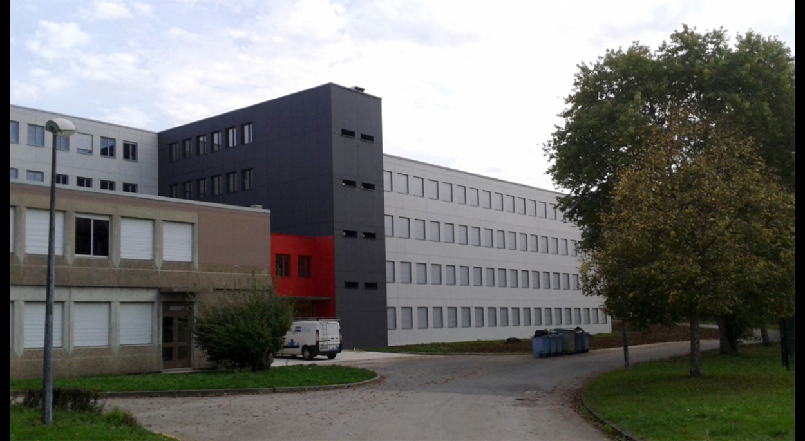

Je m'appelle Léo GUISLAIN et j'ai 21 ans ! Je suis né dans le Nord et j'ai déménagé dans le Jura dés mon entrée au collège.
Je passe la plupart de mes journées derrière un ordinateur et j'adore ça, que ce soit pour jouer aux jeux vidéo, écouter de la musique ou regarder des films.
En dehors de ma chambre, j'aime beaucoup sortir avec des amis pour faire toutes sortes d'activités : Bowling, Karting et tout ce qui peut se terminer en "-ing".
Pour en revenir à ma passion première, les jeux-vidéo, j'y joue depuis que je suis tout petit, je ne joue qu'à des jeux multijoueur et ce sont également souvent des jeux en équipe. Il m'est arrivé récemment d'organiser plusieurs tournois sur Minecraft, ces tournois avaient réuni plus de 300 joueurs différents. Je suis quelqu'un de très calme et j'aime aller au bout des choses.
Passionné par le numérique depuis longtemps, j'ai grace au DAQ (Dispositif en Amont de la Qualification) mis la main sur LE métier que je voulais faire. Pour être certain que ce projet me plaise, je me suis beaucoup documenté sur ce qu'était le métier de développeur web et j'ai tenté de réaliser un premier projet de site web que voici.
Pour moi, un développeur web c'est quelqu'un qui crée un site web seul ou en équipe et qui répond au mieux aux besoins de son / ses client(s). Il doit toujours se renseigner sur les différentes avancées technologiques, c'est pour celà que l'auto-formation est primordiale pour réaliser ce métier. En ce qui me concerne, je pense que le coté "Back-End" du développement web est la partie qui me plaît le plus, l'aspect visuel du site est moins intéressant à mes yeux que l'aspect fonctionnel mais ils sont tous 2 tout aussi importants.
Savoir où je vais avant de démarrer quelque chose m'aide à être plus efficace et à savoir sur quoi me concentrer. J'ai dû faire preuve d'une grande organisation lorsque j'ai organisé différents tournois.
J'adore utiliser différentes technologies, avoir des avis différents et connaitre les façons de faires des autres.
J'ai très souvent l'habitude de jouer en multijoueur à différents jeux en équipe, il est primordial de bien savoir communiquer et se faire comprendre par toute l'équipe pour mener à bien un but commun.
Sauveteur Secouriste du Travail, MFR - Salins les bains
Dispositif en Amont de la Qualification, GRETA Jura - Arbois
Lycée du bois - Mouchard
guislainleo@gmail.com
06.58.17.20.29
2 place de la mairie, 39110, Saint-Thiébaud